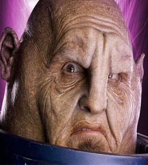

| Home | The Doctors | The Companions | The Villains |
|
|||
| cf
The SontaransSontarans thrive on combat and delight in the rigours of warfare. They reproduce through cloning programmes meaning they can be created in huge numbers - ideal for a race of soldiers literally born to fight.They have one physical weakness - a small aperture at the rear of their thick, squat necks known as a 'probic vent'. A blow to this can stun or even kill a Sontaran but with typical belligerence they believe it offers a kind of strength as it ensures they can never turn their back on opponents in battle.Their enduring enemies are a shape-shifting race known as the Rutans but Sontarans will, it seems, engage any species in battle. In the Fourth Doctor's era they even had the temerity to attempt an invasion of Gallifrey itself. Their cunning and genius for warfare meant they almost succeeded and although they were narrowly defeated the Sontarans survived to indulge their passion for warfare throughout the universe. |